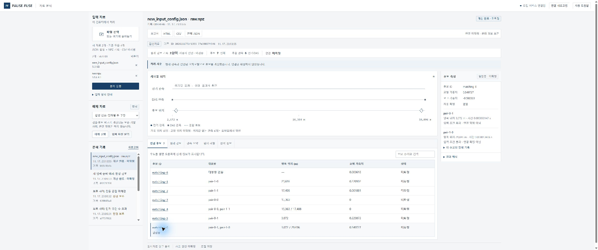
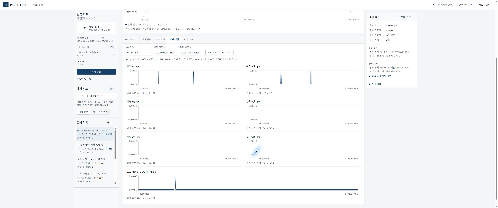
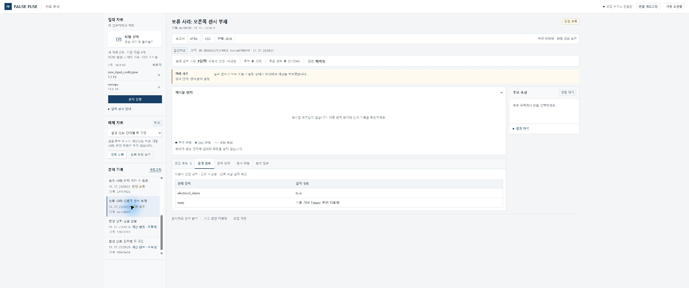
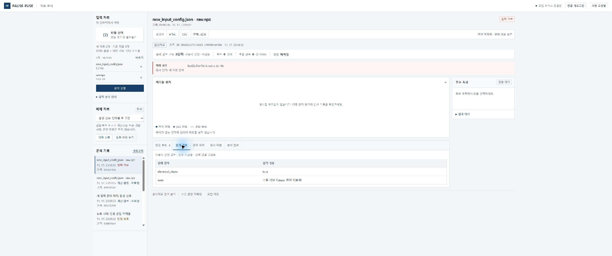

Subsea Power Cable · Event Association
경보는 이미 충분합니다. 부족한 것은 연결할 근거입니다.
PAUSE-FUSE는 저장된 전기 신호와 광섬유 진동 기록을 대조해, 연결 후보와 보류 이유를 원래 경보와 함께 보여 주는 로컬 연구용 분석 소프트웨어입니다.
- 로컬 분석기 구현자동 기능검사 48개 통과
- 특허출원 10-2026-0209613
- 검증 범위합성 개발자료 기준 · 현장 검증 전
가까운 시각이라는 이유만으로 연결하지 않습니다.
전기 이상과 주변 진동이 시간·위치상 가깝다는 사실만으로 같은 사건이라고 확정하지 않습니다.
- 전기 신호 양쪽 단자 · 3상
- 광섬유 진동 DAS
- 개념 시각화 · 실제 계측 화면 아님
Problem
바다 밑 송전케이블은 외부 충격으로 손상될 수 있습니다.
출처: AP Sensing, 해저 전력케이블 감시 안내
EstLink 2 · 핀란드–에스토니아
6
닻에 손상된 뒤, 운전을 재개하기까지
이 사건의 기간이며 산업 평균이 아닙니다.출처: 엘레링(2025.04.16.; 06.18.)
같은 사건 · 수리비 추정
5,0006,000
운영사가 2025년 4월 당시 추정한 수리비
- 손상 구간 약 1km 교체
- 재매설
- 통전·부하 시험
- 운전 복귀
당시 추정치이며 확정 정산액이 아닙니다.출처: 엘레링(2025.04.16.; 06.18.)
복구 장비가 아닙니다. 경보 뒤의 검토를 돕습니다.
PAUSE-FUSE는 복구를 직접 수행하지 않습니다. 담당자가 어느 기록을 함께 살펴볼지, 어떤 조건이 부족한지 확인하도록 돕는 분석 소프트웨어입니다.
복구 기간·수리비 절감 효과는 검증되지 않았습니다.
같은 사건일까?
Why it is hard
전기 계측과 광섬유 센싱은 시각과 위치 기준, 오차가 서로 다릅니다. 전기 이상 직전에 가까운 곳에서 진동이 있었더라도, 그것이 원인인지 우연히 겹쳤는지는 선후만으로 판단할 수 없습니다.
출처: AP Sensing, Subsea Cable Monitoring
PAUSE
근거가 부족하면, 판단을 보류합니다.
FUSE
서로 다른 경보를 결합합니다.
PAUSE-FUSE
연결을 보류해도
원래 경보는 지우지 않습니다.
How it works
입력전기 경보 기록진동 경보 기록시계·보정 이력
- 01
조건 검사
좌표, 시계, 보정값, 관측창이 검증된 규격과 맞는지 먼저 확인합니다.
- 02
후보 비교
두 계측이 함께 갖는 오차를 반영해 연결 가능성을 한꺼번에 비교합니다.
- 03
보류 판단
자료 부족, 후보 충돌, 계산 한도 초과는 이유와 함께 보류합니다.
- 04
기록 보존
원래 경보, 선택되지 않은 후보, 입력과 실행 이력을 함께 저장합니다.
결과점검 후보와 근거보류한 이유원래 경보 기록
결과는 사고 원인의 자동 확정이나 계통 보호 명령이 아닙니다.
Product
실제 파일을 넣어
계산하는 프로그램입니다.
- 파일 입력과 연결 후보 검토설정·신호 파일을 직접 불러와 후보 목록과 상세 기록을 확인합니다. 화면의 7개는 이 합성 사례의 후보 수이며, 연결은 미확정입니다.
- 전기·진동 원시 파형 확인양쪽 3상 전기 파형과 선택한 광섬유 진동 채널을 조회합니다.
- 필수 센서가 없을 때 판정 보류오른쪽 센서가 없도록 만든 합성 사례에서 보류 이유와 원래 경보를 표시합니다.
- 손상 파일의 입력 거부의도적으로 손상시킨 신호 파일은 거부하고 이유를 남깁니다.
실제 프로그램 실행 화면 · 입력은 합성 개발자료입니다. 현장 계측 화면이나 진단 성능의 증거가 아닙니다.




Verification
구현하고, 기능을 검사했습니다.
48개
자동 기능검사 통과
계산 연결 24 · 서버·실행 12 · 파형 9 · 보고서 3
6종
합성 예제 재실행
계산 완료 3종 · 예상대로 판정 보류 3종
8건·54개
종료·재실행 뒤에도 보존
분석 8건과 입력·결과 파일 54개의 내용 일치
소프트웨어 기능검사 수치이며 현장 정확도가 아닙니다. · 출처: 자체 로컬 분석기 구현·검증 기록(2026.11.17.)
Honest result
좋은 결과와 손실을
함께 기록했습니다.
잘못 묶는 경우 약 28% 감소
완전 회수는 30건 감소
잘못 연결하는 일은 줄었지만, 관련 관측을 놓치는 경우가 함께 늘었습니다. 그래서 다음 검증의 기준을 오연계 감소와 회수율 확보의 동시 충족으로 잡았습니다.
같은 합성자료(분석구간 448개)로 비교한 개발시험 결과이며, 실제 해저케이블에서의 진단 정확도가 아닙니다.
Research record
검증 과정을 숫자로 남깁니다.
- 27,240
- 합성 사례·관측창초기 8개 시험군 합산 · 시나리오 재사용 포함
- 2,654,616
- 가설 계산항 대조개발 분석구간 448개
- 178/178
- 원시 신호 통합 검사합성 19사례 · 처음 176개 통과, 수정 뒤 같은 입력으로 재검사
- 611/611
- 저장 기록 감사 일치원자료·소스·결과의 보존과 일치 확인
서로 다른 단위이며, 독립 실험이나 현장 시험 횟수가 아닙니다. 모두 합성·개발시험 기준입니다.
Intellectual property
처리 방법과 장치를 특허로 출원했습니다.
- 발명의 명칭
- 해저 송전케이블 사건의 적용 조건을 검사하여 전역 연계 후보를 제공하는 정보처리 방법 및 장치
- 출원일
- 2026.10.28
- 청구항
- 9개 · 방법, 장치, 기록매체
- 상태
- 출원 (등록 결정 전)
Market backdrop
해저 전력망이 늘어나고 있습니다.
100GW
2030년 재생에너지 보급 목표
정부 정책 목표 · 해상풍력만의 목표는 아님
97개·31.5GW
해상풍력 허가사업
2024년 말 기준 · 제주·상업운전 제외
162.4→433억 달러
세계 해저 전력케이블 산업 전망
2026 → 2035 · 연 11.52%
산업 배경이며 분석 소프트웨어의 직접 시장 규모가 아닙니다. · 출처: 기후에너지환경부(2026.02.01.) · 기후솔루션(2025.02.) · GMI(2026.11.)
Business model
분석 과업으로 시작해
설치와 연간 사용으로.
- 01자료 분석 과업한 구간·한 기간의 저장자료를 분석해 보고서로 납품과업 3,000만 원 · 가정
- 02설치·연동기관 내부 설치와 계측 자료 연동설치 8,000만 원 · 가정
- 03연간 사용기준 보정과 업데이트연 1,500만 원 · 가정
3년차 목표3억 5,500만 원분석 5건 + 설치 2곳 + 연간 사용 3곳
단가와 수요는 내부 가정이며, 계약·매출 실적이 아닙니다.
Roadmap
좁게 검증하고, 넓힙니다.
- 지금로컬 분석기 구현·기능검증 완료저장 파일을 분석·조회·보존
- 다음 단계 · 16주 계획시험키트 제작·계측실측 자료 연동·평가, 검증 정리
- 1단계 · 3~6개월저장자료 분석허용된 저장자료로 분석 과업 수행
- 2단계 · 6~12개월기관 내부 설치형권한·이력 관리를 갖춘 패키지
- 3단계 · 2년차준실시간 진단운영 자료와 선박 위치를 함께 분석
- 4단계 · 3년차 이후적용 분야 확대내부망·지중·HVDC로 환경별 검증 뒤 확대
'지금'을 뺀 항목은 계획입니다. 1~4단계의 기간은 다음 단계(16주)가 끝난 뒤를 기준으로 한 목표입니다.
Targets
다음 검증에서 확인할 목표
5% 이하
오연계율
80% 이상
회수율 · 오연계율과 동시에
0건
원래 경보 보존 누락
10초 이내
반복 실행의 95%
20% 단축
실무자 검토 시간 중앙값
앞으로 검증할 목표이며 달성한 성과가 아닙니다. 별도 계측 회차의 분석구간 300개 이상으로 검증할 계획입니다.
보이지 않는 해저 전력망을 판단할 수 있는 정보로.
PAUSE-FUSE는 경보 앞에 선 담당자가 더 근거 있게 판단하도록 돕는 소프트웨어를 만듭니다. 검증한 범위만 말하고, 좁게 검증한 뒤 넓힙니다.
투자와 실증 협력을 함께할 분을 찾습니다.
문의 메일 보내기